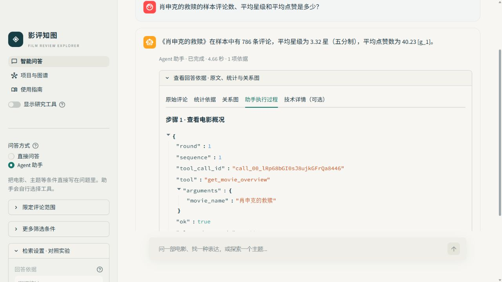

Agent 工具调用演示
回放一条真实前端记录。看看 Agent 如何选工具，以及回答里的数字从哪里来。
演示问题
肖申克的救赎的样本评论数、平均星级和平均点赞是多少？
Agent 回答
《肖申克的救赎》在样本中有 786 条评论，平均星级为 3.32 星（五分制），平均点赞数为 40.23。
查看助手执行过程
第 1 轮，第 1 次调用 get_movie_overview。工具成功返回数据。
{
"movie_name": "肖申克的救赎"
}核对统计依据
| 电影 | 评论数 | 平均星级 | 平均点赞 |
|---|---|---|---|
| 肖申克的救赎 | 786 | 3.32 | 40.23 |
查看原始前端截图
